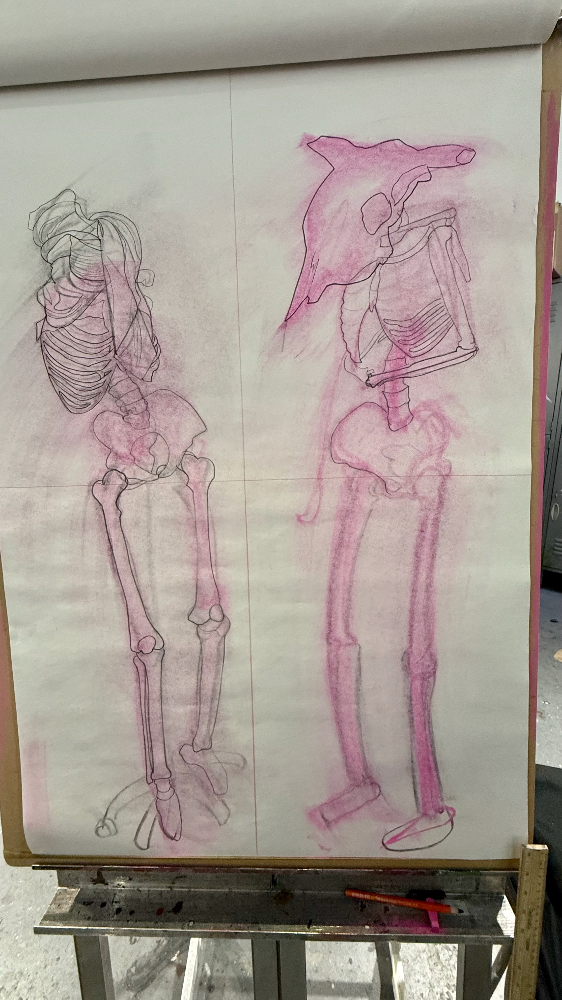
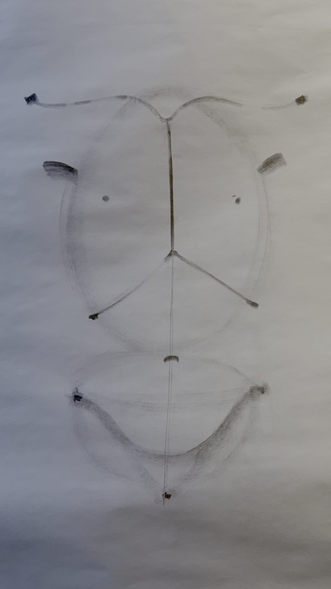

Anatomy & Form
A study in line weight, contour mapping, and structural costume design.
Explore the ProcessThe Design Process

1. Perspective Sketch
Establishing the initial 3D form and spatial awareness on paper.

2. Contour Mapping
Using topographical contour lines to map the physical peaks and valleys of the garment.

3. Tonal Rendering & Fabrication
Transitioning from fine-line rendering to material selection and physical construction.
Conceptual Framework
This piece bridges traditional studio art techniques with technical entertainment costume construction. Key focus areas included:
- Translating 2D contour drawings into 3D wearable art.
- Utilizing Adobe Illustrator for precise pattern mapping.
- Balancing aesthetic form with functional mobility.
My approach to costuming is deeply inspired by both theatrical design and structural anatomy, drawing from my hands-on experiences and specialized studies in entertainment costuming technology.